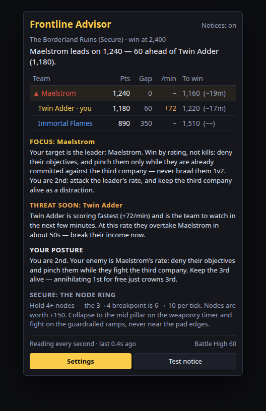
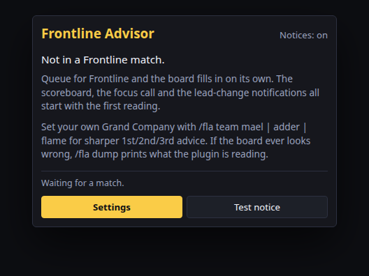
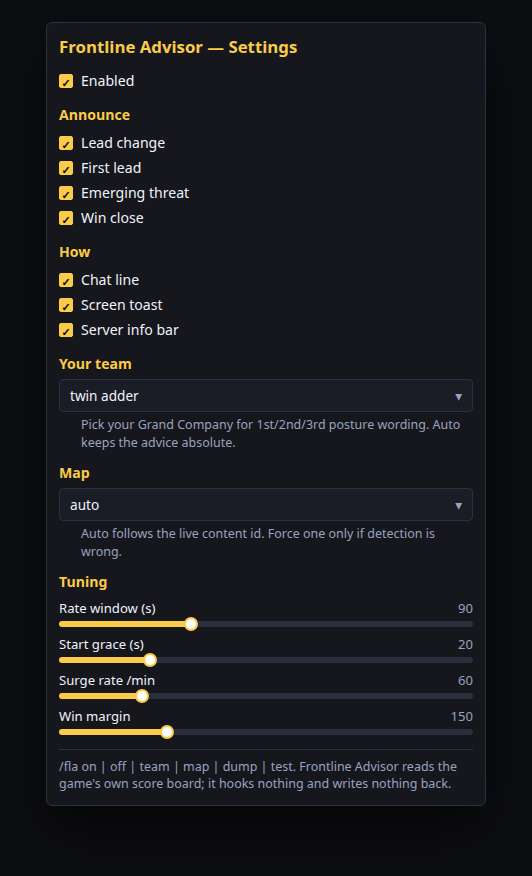
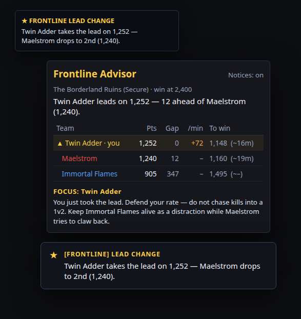

Mockups of the Dalamud windows and a lead-change notice. Sample scores only — the live UI is drawn by the plugin. Sources live under docs/screenshots/.




Mockups only — not captures from a live client.